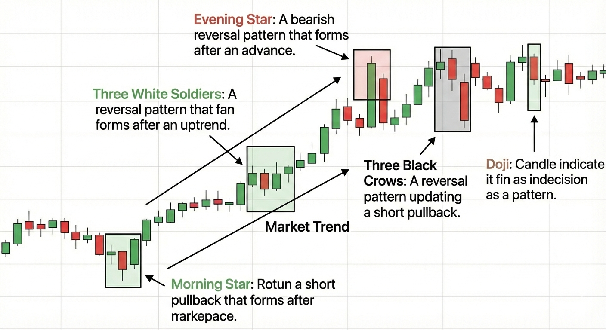

Trading Flashcards
Moving Averages & VWAP

SMA = (P₁ + P₂ + ... + Pₙ) / n
EMA = (Price × k) + (Previous EMA × (1 − k))
k = 2 / (n + 1)
VWAP = Σ(Price × Volume) / Σ(Volume)
- SMA shows the average price over a period and reflects long-term trend direction.
- EMA gives more weight to recent prices and reacts faster to market changes.
- VWAP represents the true average price based on trading volume.
- Institutions use VWAP as a fair value benchmark.
- Price above these levels indicates bullish strength.
- Price below them suggests bearish pressure.
- EMA crossing above SMA often signals momentum shifts.
- VWAP acts as dynamic support and resistance.
Bollinger Bands & RSI

Middle Band = 20-period SMA
Upper Band = SMA + (2 × Standard Deviation)
Lower Band = SMA − (2 × Standard Deviation)
RSI = 100 − [100 / (1 + RS)]
- Bollinger Bands measure market volatility.
- Expanding bands indicate high volatility.
- Contracting bands suggest consolidation.
- Price near upper band may signal overbought conditions.
- Price near lower band may signal oversold conditions.
- RSI measures momentum between 0 and 100.
- Above 70 indicates overbought.
- Below 30 indicates oversold.
- Divergence between price and RSI can signal reversals.
Candlestick Reversal Patterns

- Hammer appears after a downtrend and signals strong buying pressure.
- Long lower wick shows rejection of lower prices.
- Shooting Star appears after an uptrend and signals selling pressure.
- Long upper wick shows rejection of higher prices.
- Bullish Engulfing occurs when a large green candle covers the previous red candle.
- This indicates a shift from sellers to buyers.
- These patterns help identify potential reversal zones.
- Confirmation with volume or support levels improves reliability.
Market Trends & Complex Patterns
- An uptrend is defined by higher highs and higher lows.
- Downtrend shows lower highs and lower lows.
- Morning Star is a three-candle bullish reversal pattern.
- Evening Star signals bearish reversal.
- Three White Soldiers indicate strong bullish continuation.
- Three Black Crows indicate strong bearish continuation.
- Doji represents market indecision.
- Patterns are more reliable when aligned with overall trend direction.